학습은 선형 절차가 아니라 반복 루프다
수집, 학습, 실제 평가, 실패 분석, 재수집이 반복되며 각 단계의 품질이 다음 단계를 제한한다.
NVIDIA Jetson AI Lab · Research Report
LeRobot과 Isaac GR00T N1.7이 데이터를 정책으로 바꾸고, Jetson Thor·ROS 2·AgenticROS가 그 정책을 실제 센서와 행동에 연결하는 방식을 공개 세션의 30개 장면을 통해 분석했다.
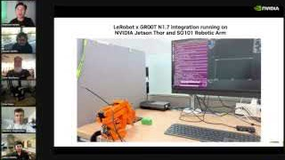
Abstract
이 세션은 로봇 조작을 하나의 모델 시연으로 설명하지 않는다. 텔레오퍼레이션과 시뮬레이션에서 데이터를 만들고, LeRobot으로 실험 흐름을 관리하며, Isaac GR00T N1.7 같은 시각·언어·행동 정책을 특정 작업에 맞춘 뒤, Jetson에서 추론하고 SO-101이 행동하도록 연결한다. 후반부에는 범위를 넓혀 자연어 목표를 ROS 도구 호출로 분해하는 AgenticROS와 RealSense 기반 인지 루프를 보여준다.
Key Findings
수집, 학습, 실제 평가, 실패 분석, 재수집이 반복되며 각 단계의 품질이 다음 단계를 제한한다.
LeRobot은 데이터·실험 워크플로를, GR00T는 시각과 언어에서 행동을 생성하는 정책 계층을 담당한다.
로봇 가까이에서 추론하면 네트워크 의존성을 줄이고 센서 입력과 행동 출력의 시간 일관성을 높일 수 있다.
노드, 토픽, 서비스와 액션이 센서·정책·제어기를 분리하면서도 함께 작동하게 만든다.
자연어 목표는 도구 선택, 인수 구성, 실행 결과 확인과 같은 중간 단계를 거쳐 로봇 행동으로 변환된다.
작업 공간 제한, 비상 정지, 로그, 실행 이력과 실패 추적이 모델 정확도만큼 시스템 성능을 결정한다.
“Physical AI의 성능은 모델 체크포인트가 아니라, 데이터에서 실제 행동까지 이어지는 전체 루프의 가장 약한 연결부에서 결정된다.” 공개 화면과 세션 구조를 바탕으로 한 본 보고서의 종합 해석
세션 전반부는 로봇 설정, 시범 수집, 데이터셋 구성, 정책 학습, 실제 평가와 재학습을 하나의 연결된 워크플로로 제시한다.
로봇 조작에서 모델 출력은 곧 물리적 힘과 이동이다. 화면에 크게 등장한 “Safety is Important!” 슬라이드는 충돌 회피, 사람과 장비 사이의 거리, 작업 공간 제한과 비상 정지가 학습 성능보다 먼저 설계되어야 함을 환기한다.
시뮬레이션은 위험한 초기 탐색과 반복 가능한 조건 생성에 유리하다. 반면 사람이 수행한 텔레오퍼레이션 시범은 실제 마찰, 카메라 노이즈, 그리퍼 접근 각도처럼 시뮬레이션이 놓치기 쉬운 조건을 담는다. 두 경로는 서로를 대체하기보다 데이터의 범위와 현실성을 보완한다.
작업 모자이크로 구성된 데이터셋 장면은 단순한 데이터 양보다 물체, 배경, 조명, 시점, 시작 상태와 조작 방식의 다양성이 중요함을 보여준다. 배포 환경이 수집 환경에서 멀어질수록 정책은 더 쉽게 실패한다.
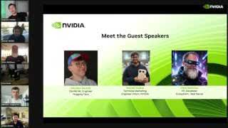
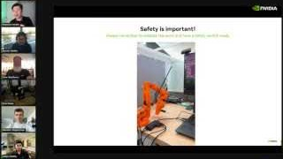
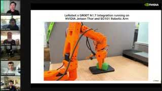
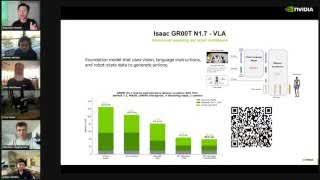
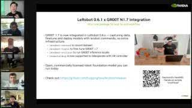
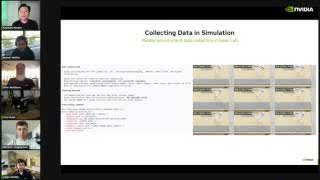
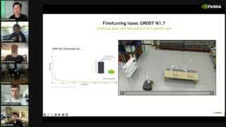
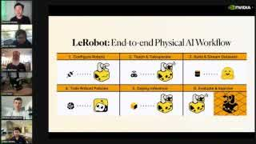
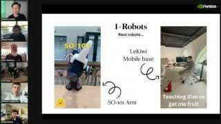
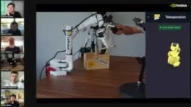
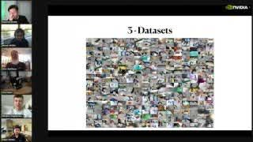
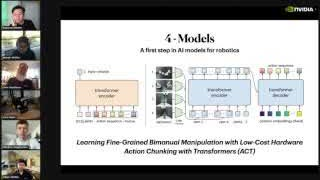
정책이 학습되었다는 사실과 로봇이 작업을 안정적으로 완료한다는 사실은 다르다. 배포 단계에서는 카메라, 지연, 장치 연결과 운영 로그가 성능의 일부가 된다.
학습 곡선이 내려가도 물체를 놓치거나, 그리퍼가 잘못된 각도로 접근하거나, 첫 시도 이후 시작 상태가 변하면 작업은 실패할 수 있다. 따라서 최종 평가는 작업 완료 여부, 실패 유형, 반복 실행의 안정성을 실제 장면에서 관찰해야 한다.
설치 명령, 장치 연결, 설정 파일, 실행 프로세스와 로그를 재현 가능하게 정리해야 다른 장비와 개발자가 동일한 경로를 반복할 수 있다. 터미널 작업이 긴 비중을 차지하는 것은 로봇 개발에서 운영 문제가 모델 추론만큼 현실적인 업무임을 보여준다.
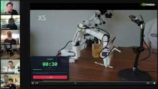
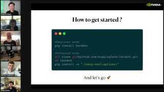
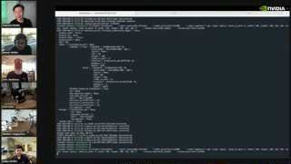
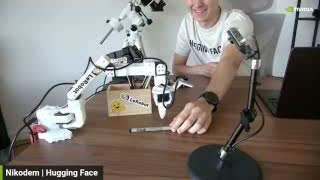
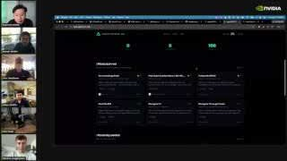
후반부 AgenticROS 데모는 로봇 정책보다 한 단계 위에서 작동한다. 에이전트가 목표를 해석하고 ROS 도구를 선택하며, 센서 결과를 다시 확인하는 폐루프를 구성한다.
사용자의 요청이 곧바로 모터 명령이 되는 것은 아니다. 에이전트는 목표를 해석하고, 등록된 ROS 도구 중 적합한 기능을 고르며, 인수를 구성하고 실행 결과를 확인한다. 이 중간 계층이 있어야 자연어의 모호함과 하드웨어 제어의 엄격함을 분리할 수 있다.
로봇은 움직인 뒤 다시 보아야 한다. RealSense와 같은 카메라가 RGB 또는 깊이 관측을 제공하면 에이전트는 객체 탐색, 거리 판단과 장면 확인을 수행할 수 있다. 그러나 카메라 장착 위치, 시야, 깊이 정렬과 로봇 좌표계가 안정적으로 정의되지 않으면 높은 수준의 에이전트도 잘못된 세계를 보게 된다.
실제 로봇을 움직이는 시스템에서는 에이전트가 그럴듯한 설명을 생성했는지보다 어떤 도구를 어떤 인수로 호출했고, 무엇을 반환받았으며, 어떤 안전 제약이 적용되었는지가 중요하다. 도구 로그와 실행 이력은 실패 원인 분석과 승인 체계의 기반이 된다.
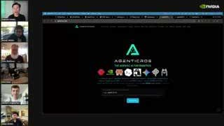
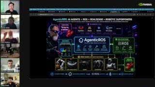
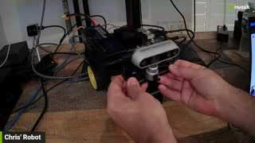
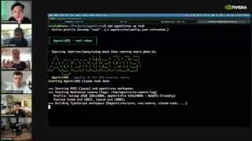
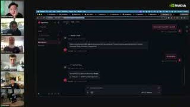
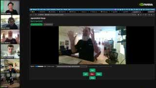
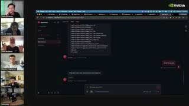
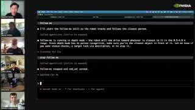
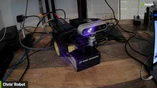
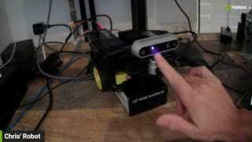
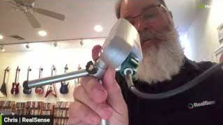
각 구성요소를 독립된 제품 목록이 아니라, 관측에서 행동까지 이어지는 시스템의 책임 단위로 정리하면 다음과 같다.
| 계층 | 화면에서 확인된 요소 | 주요 기능 | 핵심 실패 지점 |
|---|---|---|---|
| 로봇 하드웨어 | SO-101, LeKiwi, 소형 이동 로봇 | 관절·그리퍼·바퀴를 통한 행동 실행 | 충돌, 기구 오차, 작업 범위 이탈 |
| 센서 | 카메라, RealSense 계열 장치 | RGB·깊이 기반 환경 관측 | 가림, 좌표계 불일치, 장착 흔들림 |
| 데이터 | 텔레오퍼레이션, 시뮬레이션, 작업 모자이크 | 관측·상태·행동·지시의 학습 자료 구성 | 시간 불일치, 조건 편향, 다양성 부족 |
| 정책 | ACT 구조, Isaac GR00T N1.7 VLA | 관측과 언어 조건에서 연속 행동 예측 | 분포 이동, 누적 오차, 불안정한 제어 |
| 워크플로 | LeRobot 0.6.1 | 수집, 학습, 평가와 배포 연결 | 설정 불일치, 재현성 부족 |
| 엣지 컴퓨팅 | NVIDIA Jetson Thor | 로봇 가까이에서 정책 추론과 런타임 실행 | 지연, 자원 압박, 열·전력 제약 |
| 미들웨어 | ROS 2 | 노드, 토픽, 서비스·액션을 통한 연결 | 통신 상태, 메시지 계약, 좌표 변환 |
| 에이전트 | AgenticROS 대화 UI와 도구 로그 | 자연어 목표를 도구 호출과 임무 단계로 변환 | 잘못된 도구 선택, 권한, 추적성 부족 |
안전, Jetson Thor·SO-101 통합, GR00T N1.7 VLA, 시뮬레이션 수집과 파인튜닝.
로봇, 텔레오퍼레이션, 데이터셋, 모델, 설치와 실제 실행 데모.
질의응답을 거쳐 조작 정책 중심의 전반부에서 오픈소스 에이전트 데모로 이동.
ROS 2, RealSense와 이동 로봇을 연결해 명령, 관측, 도구 실행과 운영 화면을 시연.
세션이 보여준 구성은 특정 로봇 데모를 넘어, Physical AI 시스템을 설계할 때 무엇을 독립시키고 무엇을 함께 검증해야 하는지 알려준다.
데이터 품질, embodiment 정의, 상태·행동 표현, 센서 좌표계와 배포 지연을 동일한 기준으로 관리해야 모델 비교가 의미를 가진다.
LeRobot, GR00T, ROS 2와 AgenticROS를 역할별로 분리하면 정책·로봇·센서를 독립적으로 교체할 수 있다. 전제는 입력과 출력 계약이 명확하다는 것이다.
승인, 속도와 작업 공간 제한, 비상 정지, 권한 범위와 도구 호출 로그는 에이전트 인터페이스 아래에서 강제되어야 한다.
완성된 대형 VLA를 먼저 선택하기보다 작은 작업과 측정 가능한 성공 조건을 정의하는 편이 낫다. 로봇이 실패했을 때 데이터, 인지, 정책, 제어 중 어느 계층에서 문제가 시작되었는지 구분할 수 있어야 다음 실험이 빨라진다.
자동 자막 엔드포인트가 HTTP 429 및 IP 차단으로 응답해 발표자의 상세 논증, 질의응답, 정확한 명령어와 수치는 분석 범위에서 제외했다.
장면은 약 10초 간격의 320×180 공개 스토리보드에서 추출했다. 흐릿한 수치와 코드를 확대 해석하거나 단일 프레임으로 동작 성공 여부를 단정하지 않았다.
Reader’s Ending
좋은 정책도 잘못 장착된 카메라, 어긋난 좌표계, 불완전한 데이터, 추적할 수 없는 도구 호출 위에서는 신뢰할 수 없다. 반대로 작은 로봇과 제한된 모델도 명확한 인터페이스, 안전 경계, 반복 가능한 평가 루프를 갖추면 유용한 Physical AI 연구 플랫폼이 된다.
다음 실험의 출발점은 “어떤 모델을 쓸까?”보다 “관측에서 행동까지 무엇을 측정하고 다시 설명할 수 있는가?”에 가깝다.
Source Notes
분석 방법: 영상 메타데이터와 공식 안내를 먼저 확인한 뒤 공개 스토리보드의 시간순 장면을 로봇 학습, 데이터, 정책, 배포, ROS 연결, 에이전트와 센서의 여섯 주제로 분류했다. 화면에 직접 보이는 요소와 그에 대한 해석을 구분했으며, 판독할 수 없는 세부 수치·명령어·발표자의 표현은 재구성하지 않았다.